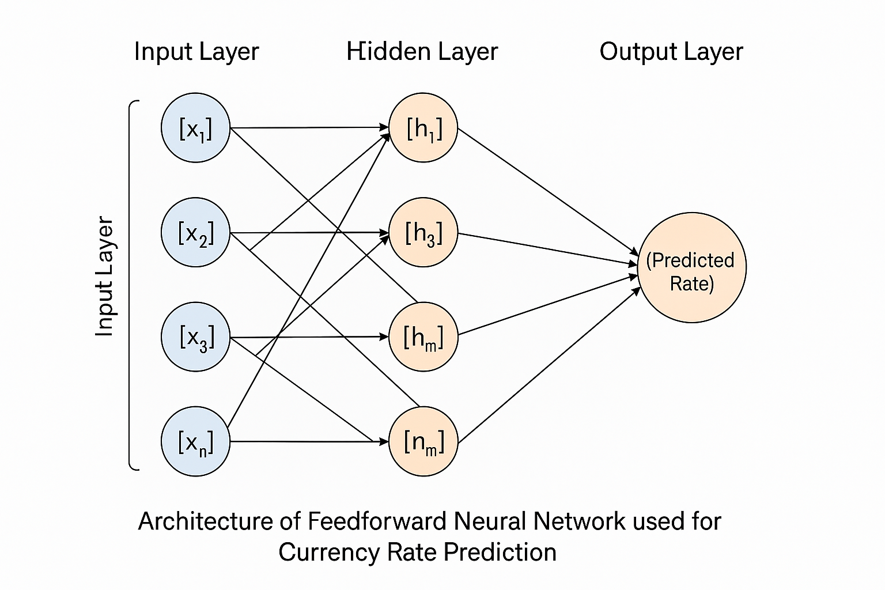

Welcome
This project focuses on the design and development of a currency exchange and recognition support system using image processing and artificial neural networks.
About Project
Developed by Kwame Tari Omonibo as part of B.Sc. in Computer Science at Federal University Otuoke. The system is designed to assist in automatic recognition and conversion of five currencies: NGN, USD, EUR, AUD, and INR.
Currency Converter
to
System Architecture
The system is based on Feedforward Neural Networks (FFNN) and Time Delay Neural Networks (TDNN) models, trained using currency image data.
Literature Review
Several studies have shown the efficiency of neural networks in exchange rate prediction including works by Athanasios Sfetsos, Kamruzzaman, and others using backpropagation and SCG algorithms.